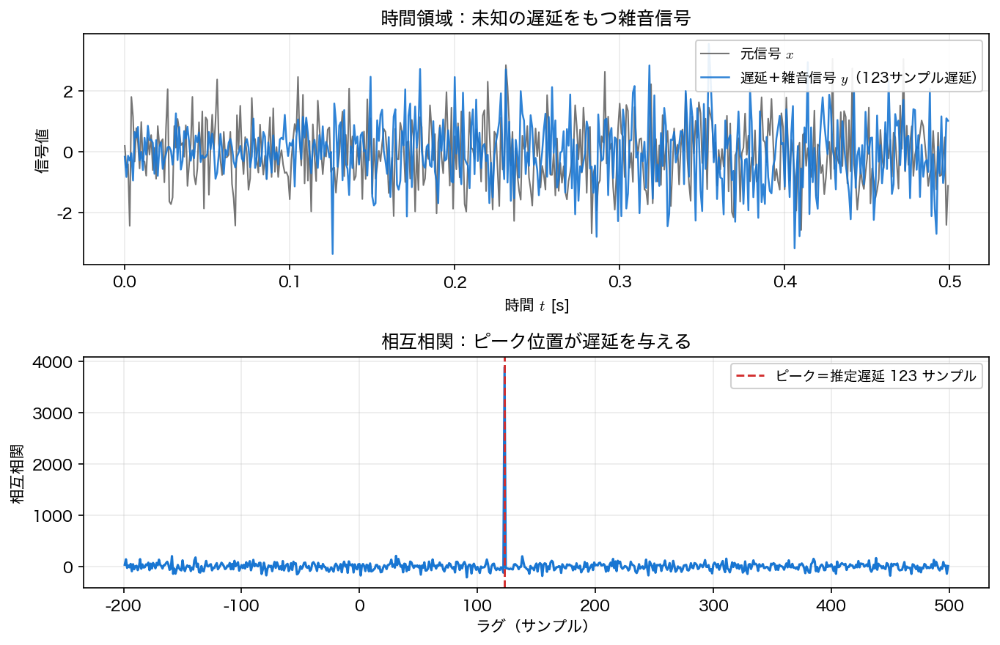

高速畳み込みと相互相関
前ページまでで、フーリエ変換とその離散版 FFT を学んだ。本ページでは、フーリエ変換の性質のうち最も応用の広い 畳み込み定理 を使い、畳み込みを 計算の高速化 に役立て、さらに近い演算である 相互相関 で信号の遅延を検出する。周波数領域で不要な帯域を落とす フィルタリング への応用は第4回で扱う。
畳み込みを FFT で高速化する
長さ \(N\) の2つの信号の畳み込みを定義どおり計算すると、各出力点で総和が必要になり \(O(N^2)\) かかる。だが畳み込み定理を使えば、
と書ける。右辺は FFT 2回＋積＋逆 FFT 1回 で、計算量は FFT が支配して \(O(N\log N)\) になる。\(N\) が大きいほど差は劇的に開く。scipy.signal.fftconvolve がこれを実装している。
import numpy as np
import scipy.signal as ss
rng = np.random.default_rng(1)
a = rng.standard_normal(2000)
b = rng.standard_normal(2000)
d_direct = np.convolve(a, b) # 直接法 O(N^2)
d_fft = ss.fftconvolve(a, b) # FFT 法 O(N log N)
print(f"max|直接 - FFT| = {np.max(np.abs(d_direct - d_fft)):.2e}")
両者は丸め誤差の範囲で完全に一致する。実行時間を信号長 \(N\) に対して測ると、直接法は \(N^2\)、FFT 法は \(N\log N\) に沿って増え、\(N\) が大きいほど FFT 法が圧倒的に速くなる（手元の環境では \(N=32000\) で数百倍）。

巡回畳み込み vs 線形畳み込み
FFT で畳み込むときに必ず注意すべき落とし穴がある。DFT は信号が 周期的に繰り返す とみなすため、同じ長さ \(N\) のまま FFT の積をとって逆変換すると、得られるのは 巡回畳み込み（circular convolution） であり、端が反対側に 折り返して（aliasing） 混入する。本来ほしい 線形畳み込み とは一致しない。
rng = np.random.default_rng(3)
a = rng.standard_normal(8)
b = rng.standard_normal(8)
lin = np.convolve(a, b) # 線形（長さ 15 = N+M-1）
circ = np.fft.irfft(np.fft.rfft(a) * np.fft.rfft(b), n=8) # 巡回（長さ 8 のまま）
L = len(a) + len(b) - 1 # 15
linfft = np.fft.irfft(np.fft.rfft(a, L) * np.fft.rfft(b, L), n=L) # ゼロ詰め
print(f"巡回 vs 線形先頭: max誤差 {np.max(np.abs(circ[:7] - lin[:7])):.3f}")
print(f"ゼロ詰め(L={L}) vs 線形: max誤差 < 1e-12 か → "
f"{np.max(np.abs(linfft - lin)) < 1e-12}")
長さ \(8\) のまま積をとった巡回畳み込みは線形畳み込みと大きくずれる。一方、両信号を 長さ \(N+M-1\) にゼロ詰め してから FFT すれば、折り返しが起きる余地がなくなり、線形畳み込みと 丸め誤差の範囲で一致 する（実際の値は数 \(10^{-15}\)）。
丸め誤差の桁は「約」でしか一致しない
ここで誤差そのものを表示せず不等式で判定したのは、機械精度に近い値が 実行ごとに変わりうる からである。FFT や行列積は内部で使うライブラリ（BLAS/FFT の実装）やスレッド数に応じて演算の順序を変えるため、\(10^{-15}\) 台の値は \(1.8\times10^{-15}\) になったり \(3.6\times10^{-15}\) になったりする。「一致するか」を確かめたいときは、値をそのまま比べるのではなく 許容誤差との比較（np.allclose など）を使うのが定石である。
FFT で畳み込むときは必ずゼロ詰め
scipy.signal.fftconvolve は内部で自動的に \(N+M-1\) へゼロ詰めしてくれるので線形畳み込みが得られる。だが自分で rfft/irfft を使って畳み込むときは、ゼロ詰めを忘れると巡回畳み込みになり端が壊れる。第4回のフィルタリングでも、有限長フィルタを畳み込みで適用する場合は同じ注意が要る。
相互相関と遅延推定
畳み込みとよく似た演算に 相互相関（cross-correlation） がある。畳み込みが一方の信号を 時間反転 して重ねる（\(\sum_n x[n]\,y[\ell-n]\)）のに対し、相互相関は 反転せず そのままずらして重ねる点が違う。一般には（複素信号のとき）片方の共役をとって
と定義する。実信号なら \(\overline{x[n]}=x[n]\) なので共役は省ける。相互相関は「2つの信号が どれだけずれて似ているか」を測る。ここでラグ \(\ell\) は「\(y\) を \(x\) に対して何サンプルずらすか」を表し、\(x\) と、それを \(\tau\) だけ遅らせた \(y\) の相互相関は、ラグ \(\ell=\tau\) で最大になる（\(\ell>0\) は \(y\) が \(x\) より遅れて届いた状況）。だから 相互相関のピーク位置が遅延を与える。複素信号の場合は \(\lvert (x\star y)(\ell)\rvert\) の最大を探す。これも FFT を使えば高速に計算できる（method='fft'）。
ピークが遅延に立つための条件
「ピーク＝遅延」は無条件に成り立つわけではない。必要なのは、\(y\) が \(x\) の ほぼ完全な遅延コピー（振幅が一定倍で波形が歪んでいない）であること、観測区間の端で信号が切れて重なりが大きく減らないこと、そして \(x\) の 自己相関が \(\ell=0\) に鋭いピークをもつ（＝白色雑音のように自己相関が短い）ことである。
最後の条件が破れると簡単に失敗する。たとえば x=[1,100,1000] を \(\tau=1\) だけ遅らせた y=[0,1,100] では、相関が最大になるラグは \(1\) ではなく \(0\) である。\(x\) の値の大小差が極端なため、\(x\) 自身の大きな成分どうしが重なるラグのほうが積の和が大きくなってしまうからである。下の例が旨くいくのは、base を 白色雑音（自己相関が \(\ell=0\) にだけ立つ）に取っているためで、レーダーやソナーが擬似雑音符号やチャープを送信するのも同じ理由による。
scipy.signal.correlate の引数順とラグの符号
上の定義 \((x\star y)(\ell)=\sum_n \overline{x[n]}\,y[n+\ell]\)（本文の \(x=\)base、\(y\) が遅れて届いた信号）に対応するのは、下のコードの ss.correlate(y, base)（第1引数が \(y\)、第2引数が \(x=\)base）である。この引数順だと、base より \(\tau\) サンプル遅れて届いた y に対しピークは ラグ \(+\tau=+123\) に立つ。引数を入れ替えて ss.correlate(base, y) にするとラグの符号が反転し、ピークは \(-123\) に出る。どちらを「遅延」と読むかは引数の順で決まるので、符号規約を必ず確認すること。
未知の遅延をもち雑音にまみれた信号から、遅延を当ててみる。
rng = np.random.default_rng(2)
fs, N = 1000.0, 4000
base = rng.standard_normal(N) # 送信した信号
true_delay = 123 # （未知とする）真の遅延
y = np.zeros(N)
y[true_delay:] = base[:N - true_delay] # 遅れて届いた信号
y = y + 0.5 * rng.standard_normal(N) # 受信時の雑音
corr = ss.correlate(y, base, mode='full', method='fft')
lags = ss.correlation_lags(N, N, mode='full')
est = lags[np.argmax(corr)] # ピーク位置 = 推定遅延
print(f"推定遅延 = {est} サンプル ({est/fs*1e3:.1f} ms) 真値 {true_delay}")
雑音が信号と同程度の大きさでも、相互相関のピークは真の遅延 \(123\) サンプルをぴたりと当てる。これは 到来時間差（TDOA）による音源定位、レーダー・ソナーの距離測定、エコーの検出 など、計測の基礎技術である。

まとめ
- 畳み込み定理で畳み込みは \(\mathcal{F}^{-1}[\mathcal{F}[f]\cdot\mathcal{F}[g]]\) と書け、計算量が \(O(N^2)\to O(N\log N)\) に下がる（
scipy.signal.fftconvolve）。 - FFT の積は 巡回畳み込み になる。線形畳み込みを得るには \(N+M-1\) にゼロ詰め する（
fftconvolveは自動）。 - 相互相関 のピーク位置が信号の 遅延 を与える。雑音に強く、TDOA・レーダー・エコー検出に使われる（
scipy.signal.correlate(..., method='fft')）。
本講義との接続
畳み込み・相関は、入力・出力・システムを結ぶ最も基本的な操作である。次の 第4回 スペクトル解析 では、雑音や有限長の観測のもとで信号のスペクトルを正しく推定する方法と、その応用としての フィルタリング へ進む。さらにこの先の 第6〜8回 ラプラス変換 では、「周波数領域での積＝伝達関数」の考え方を、過渡応答や安定性まで含めて扱える 複素周波数領域 へ拡張する。時間とともにスペクトルが変わる信号には 第9・10回 短時間フーリエ変換・ウェーブレット変換、データから直接モードと固有振動を取り出す手法は 第13〜14回 特異値分解・動的モード分解 へつながる。畳み込み・相関は、これらすべての土台になる。